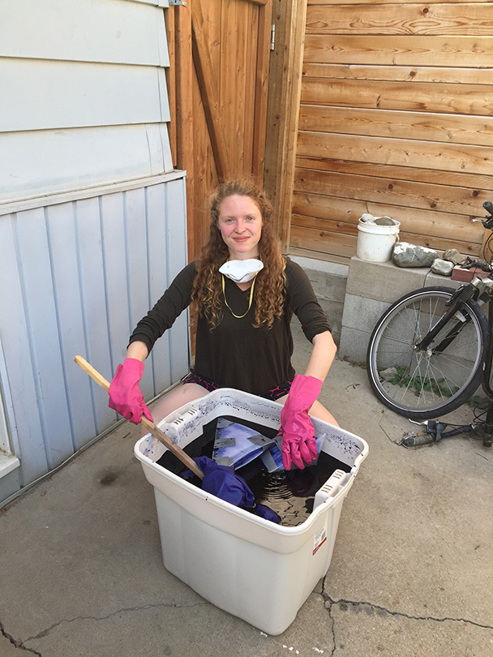
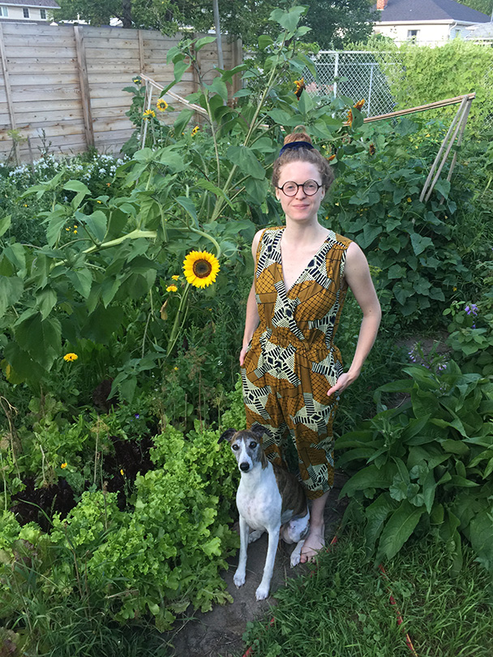

I’m a User Experience and Product Designer based in Saskatoon, Saskatchewan. I have a background in Interactive Systems Design which is a field that brings together psychology, art, and computer science.
I am naturally curious about how people think, how technology works, and how the two come together in the products we use every day.
What makes my background unique is that I understand both the user side of a product and the technical side of how it gets built. I enjoy taking complex problems, understanding what people actually need, and turning those insights into products that are useful and easy to use.
Most recently, I led UX/UI design for an AI-powered home-furnishing platform, working across consumer experiences, professional workflows, AI features, and scalable design systems.
Outside of design, I like making things and spending time outdoors. Winter usually means ballroom dancing, listening to cozy records, and sewing, while summer is for gardening, camping, and exploring.
I ask questions, challenge assumptions, and like understanding a problem before jumping to a solution.
I look beyond individual screens to understand how interactions, workflows, and products connect.
My background in psychology, art, and technology gives me different ways of looking at a problem.
My development experience helps me understand how designs become working products and collaborate effectively with developers.
My education and experience have taken me across several disciplines, but they have always come back to the same question: how do people interact with technology?
Psychology taught me to think about people, their behaviour, motivations, needs, and the ways they interact with the world around them.
Art & Design taught me to communicate visually, experiment with ideas, and pay attention to composition, detail, and aesthetics.
Computer Science taught me how technology works and gave me the ability to understand and build digital products beyond the design stage.
Interactive Systems Design brought these interests together through UX, visual design, programming, interactive media, and game development.
UX and Product Design is where these interests meet.
I am especially drawn to problems without an obvious answer where there is room to ask questions, learn from users, explore possibilities, and build something better.
I'm interested in opportunities across UX research, interaction design, UI design, prototyping, and product development, particularly with teams that value thoughtful problem solving, collaboration, and curiosity.

